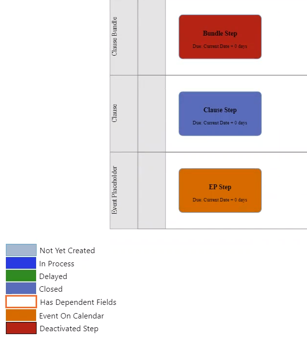

Orchestrate : .Customizing the Color Codes on the Process Visual vDecember-21
Created by Rakesh Singh, last modified on Oct 22, 2021
You can customize the color coding on the process visual from the Conga Orchestrate Setup. You can choose color codes for the keys as desired or quickly revert to the default colors. There are three default keys from the Definition Visual on the Definition page. The key indicates what colors you can set on the settings page. Additional four keys are available on an actual process object. For example, create a Business Process that matches a Definition. From the record page, clicking the Process Visual button displays the additional four keys along with the default three. You can modify the colors of all the seven keys (three default and four additional).
